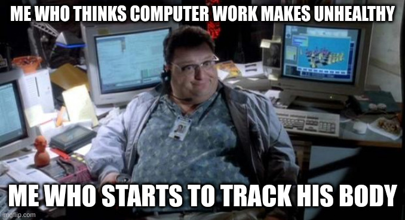
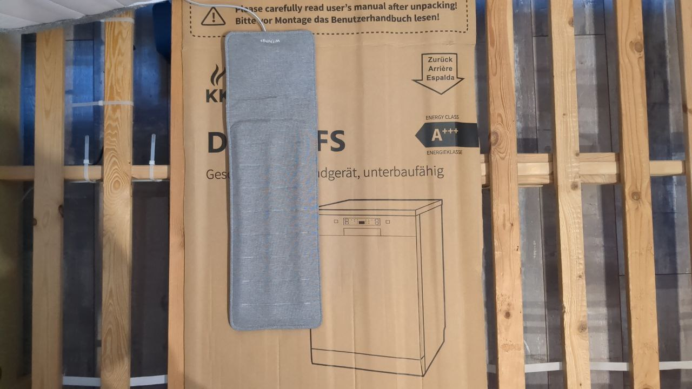
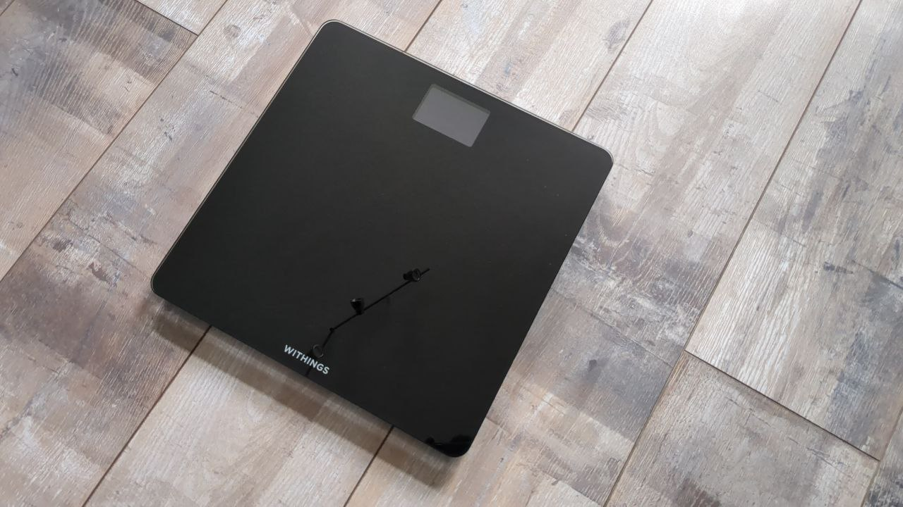
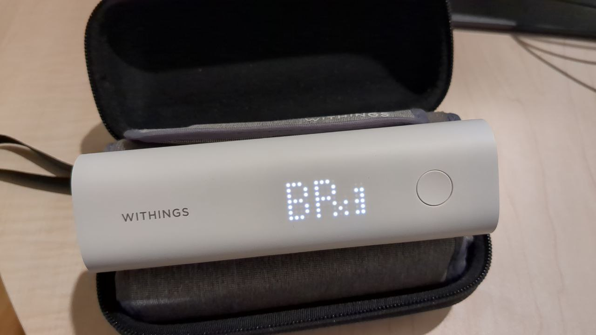
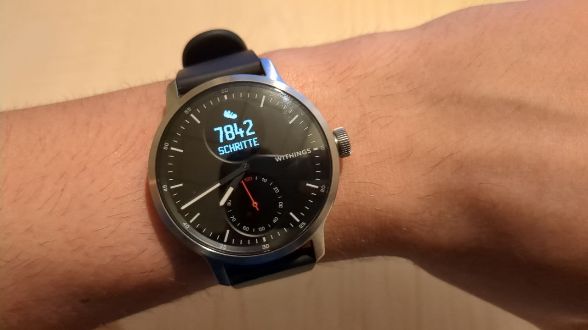
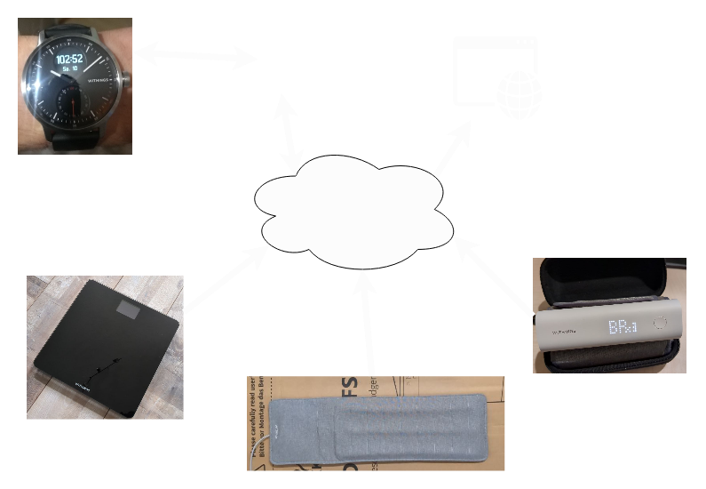
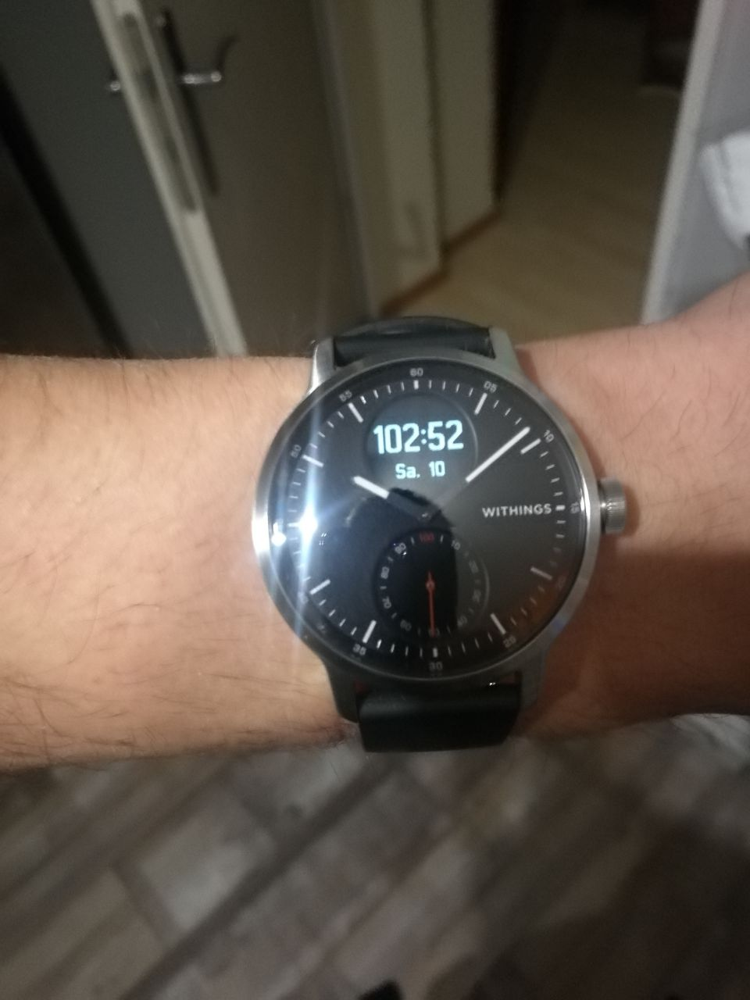
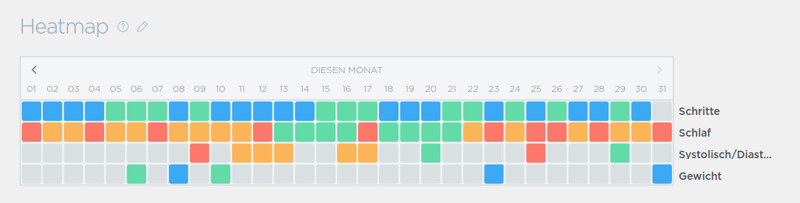
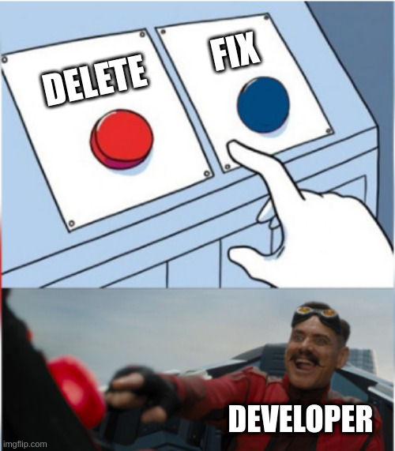

Hassel of the Week
Sebastian Feustel

Overview
System that I use.
Where did I have problems?
Withings
Some smart health devices
Track some vital parameters
Possibility to access via app or website
Sleep Analyzer

scale

Blood pressure monitor

Watch

Layout

What is your problem?
Is the clock running wrong?

Yes, but that’s not my problem.
Heatmap

contact support
1. Advice: Charge your Watch
2. Advice: Update your app
Fix

After almost a year, the heatmap is back.